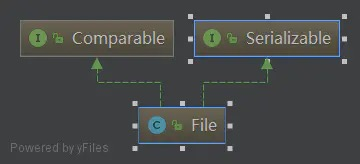

File 类的使用
概念
File 类翻译过来是一个文件，实际上它并不是一个文件，定义为 Path 更为合适，这个 Path 可以是文件的路径也可以是文件夹的路径，因为当我们 new File 的时候，只是创建了一个路径，这个路径如果创建成功，没有后缀名就是文件夹，有后缀名则创建了一个空文件。File 能新建、删除、重命名文件和目录，但 File 不能访问文件内容本身。如果需要访问文件内容本身，则需要使用输入/输出流。下面看一下 File 类的继承关系：

构造函数
public File(String pathname)：以 pathname 为路径创建 File 对象，可以是绝对路径或者相对路径，如果 pathname 是相对路径，则默认的当前路径在系统属性 user.dir 中存储。- 绝对路径：是一个固定的路径，从盘符开始
- 相对路径：是相对于某个位置开始
public File(String parent,String child)：以 parent 为父路径，child 为子路径创建 File 对象。public File(File parent,String child)：根据一个父 File 对象和子文件路径创建 File 对象。
因为 Java 命名比较规范，所以很好理解，有一点需要注意的是，这个方法不能保证文件一定会创建成功，但是即使失败也不会报异常，所以一般我们在文件创建之后需要判断一下当前文件是否创建成功，调用一下 exists() 方法来判断文件是否创建成功，不成功则调用 createNewFile()，此方法失败会抛异常，归纳起来如下。
1 | /** |
路径分隔符
路径中的每级目录之间用一个路径分隔符隔开。
路径中路径分隔符和系统有关：
- Windows 和 DOS 系统默认使用“\”来表示
- UNIX 和 URL 使用“/”来表示
Java 程序支持跨平台运行，因此路径分隔符要慎用。
为了解决这个隐患，File 类提供了一个常量：
public static final String separator根据操作系统，动态的提供分隔符。举例：1
2
3File file1 = new File("d:\\atguigu\\info.txt");
File file2 = new File("d:" + File.separator + "atguigu" + File.separator + "info.txt");
File file3 = new File("d:/atguigu");
File 类常用方法
创建与删除
public boolean createNewFile()：创建文件。若文件存在，则不创建，返回 false。public boolean mkdir()：创建文件目录。如果此文件目录存在，就不创建了。如果此文件目录的上层目录不存在，也不创建。public boolean mkdirs()：创建文件目录。如果上层文件目录不存在，一并创建。
注意事项：如果你创建文件或者文件目录没有写盘符路径，那么默认在项目路径下。
public boolean delete()：删除文件或者文件夹。
删除注意事项： Java 中的删除不走回收站。要删除一个文件目录，请注意该文件目录内不能包含文件或者文件目录。
判断方法
public boolean isDirectory()：判断是否是文件目录。public boolean isFile()：判断是否是文件。public boolean exists()：判断是否存在。public boolean canRead()：判断是否可读。public boolean canWrite()：判断是否可写。public boolean isHidden()：判断是否隐藏。public boolean isAbsolute()：判断是否是绝对路径。
获取方法
public String getAbsolutePath()：获取绝对路径。public String getPath()：获取路径。public String getName()：获取名称。public String getParent()：获取上层文件目录路径。若无，返回 null。public long length()：获取文件长度（即：字节数）。不能获取目录的长度。public long lastModified()：获取最后一次的修改时间，毫秒值。public String[] list()：获取指定目录下的所有文件或者文件目录的名称数组。public File[] listFiles()：获取指定目录下的所有文件或者文件目录的 File 数组。
重命名方法
public boolean renameTo(File dest)：把文件重命名为指定的文件路径。
文件过滤
File[] listFiles(FilenameFilter filter)：返回满足过滤器要求的一个文件对象数组，其中包含了一个重要的接口 FileNameFilter，该接口是个文件过滤器，包含了一个 accept(File dir,String name) 方法，该方法依次对指定 File 的所有子目录或者文件进行迭代，按照指定条件，进行过滤，过滤出满足条件的所有文件。
1 |
|
file 目录下的所有子文件如果满足后缀是 .apk 的条件的文件都会被过滤出来。
If you like this blog or find it useful for you, you are welcome to comment on it. You are also welcome to share this blog, so that more people can participate in it. If the images used in the blog infringe your copyright, please contact the author to delete them. Thank you !